Menu: Controle da Qualidade › Amostragem › Amostragens Pendentes (o título da tela é "COLETAS E AMOSTRAGENS PENDENTES") · Situação do manual: testado parcialmente em 20/11/2026 (robô CQ-A, 22 prints) · Situação da tela: real, testada parcialmente: o registro da amostragem não grava (DV-CQ-N-043) · Fonte dos prints: versão nova.
Testado parcialmente em 20/11/2026 pela pista CQ-A (conta de administrador, 22 prints
PNC1). Confirmado na tela: título, filtros, grades, ícones, LOG e o pop-up Registro de Amostragem (que fica dentro desta tela) com as suas conferências e recusas. Não foi possível: gravar o registro (o servidor recusa, DV-CQ-N-043), a visão comum com a conta de um amostrador (a Programação não deixa escolher o responsável, DV-CQ-N-042), a lupa de amostragem executada ou cancelada (não há na massa), o IMPRIMIR FICHA (o clique não abriu nada no navegador automático) e o perfil restrito (pista CQ-C). O que ainda vem do manual do legado vai marcado "(do legado; a confirmar na versão nova)". A amostragem usada foi a da solicitação 033/26 (item T.INS-001, Físico-Químico), aberta pela visão do administrador (tela 13), porque com a conta de administrador a visão comum não traz coleta. Nada foi gravado.
Como ler este manual: rota (depois do endereço do sistema): /controle-qualidade/amostragens-pendentes. Entrada de menu "AMOSTRAGENS PENDENTES", número 3 do levantamento (execucao/2026-11-20-levantamento-menu-cq/menu.csv). Fonte dos testes: execucao/2026-11-20-pista-cq-a/observacoes.md.
Para que serve
Na versão nova a tela fica no menu Amostragem. Em 11/11/2026 aparecia como provisória; em 20/11/2026 abre como tela real e traz dentro dela o Registro de Amostragem (pop-up aberto pelo lápis), que não consegue gravar (DV-CQ-N-043).
Como era no legado (do legado; a confirmar na versão nova):
As Amostragens Pendentes são a fila de trabalho do amostrador: listam as amostragens (coletas) programadas para a pessoa e ainda não executadas, e também as executadas e canceladas, com solicitação, situação, responsável, tipo de análise, tipo de item, item e item de entrada. Coletas de solicitações urgentes aparecem na grade "Urgentes!", acima da lista normal. Cada linha leva ao registro da amostragem (lápis, quando pendente ou programada) ou aos detalhes (lupa, quando executada ou cancelada). A visão comum mostra só as coletas em que a pessoa é a responsável; a Visão Administrador mostra todas. Quem usa é o amostrador e o verificador (leitura da área). No alto da tela o sistema escreve "COLETAS E AMOSTRAGENS PENDENTES".
Antes de começar (o que precisa existir)
(do legado; a confirmar na versão nova) Conferir na tela antes de afirmar.
| Precisa existir | Para quê | Onde se cadastra |
|---|---|---|
| Coleta programada para você (amostragem Pendente ou Programada, com você como responsável) | A lista só mostra as suas; se vier vazia, peça a quem programa | Solicitação de Análise › Programação de Amostragem |
| Solicitação de análise que originou a coleta | Dá o item, o tipo de análise e o item de entrada | Solicitação de Análise (ou chegada automática do Estoque ou da Produção) |
| Urgência (opcional) | Faz a coleta cair na grade "Urgentes!" | Solicitação de Análise › Priorização de Solicitação Análise |
A chefia vê tudo na Visão Administrador (outra função e outra tela).
Passo a passo
- Abrir a tela. No menu Controle da Qualidade › Amostragem, clique em Amostragens Pendentes. A tela abre com o título COLETAS E AMOSTRAGENS PENDENTES, o quadro "Pesquisa", as opções PRODUTO / MATERIAL (marcada) e ÁGUA / AMBIENTE e os campos TIPO DE ITEM, ITEM ANÁLISE e CÓDIGO (os dois últimos em cinza até escolher o Tipo de Item), TIPO ANÁLISE (Físico-Químico, Microbiológica), SOLICITAÇÃO, ITEM ENTRADA e SITUAÇÃO (SELECIONE, Pendente, Programada, Executada, Cancelada). Botões: PESQUISAR e LIMPAR.
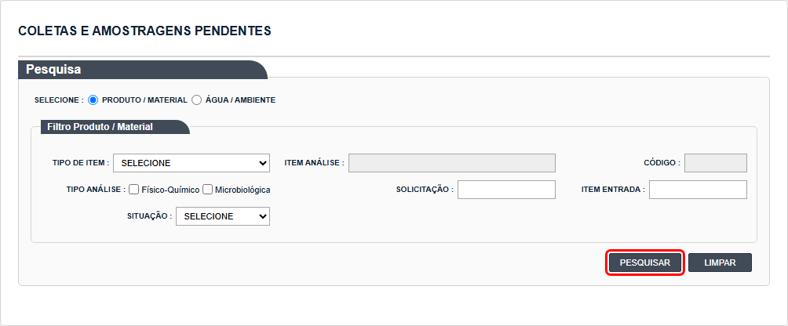
- Pesquisar sem filtro (conta de administrador). Clique em PESQUISAR. Aparece a grade Urgentes! ("Não existem Coletas indicadas como Urgente.") e a lista com "A pesquisa não retornou nenhum resultado.": a visão comum mostra só as coletas em que a pessoa é a responsável, e o administrador não é responsável por nenhuma. Os filtros, como Situação Pendente, também não trazem linhas nessa visão. (A visão do administrador, tela 13, listou a 033/26 e a 016/26 com a mesma conta.)
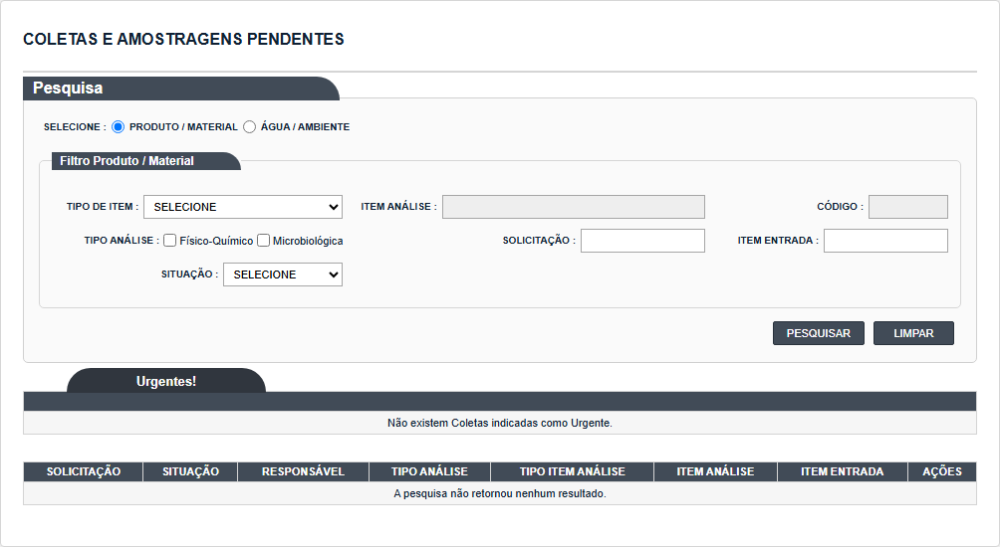
- Água / Ambiente. Marque ÁGUA / AMBIENTE: os filtros são TIPO ITEM ANÁLISE, ITEM ANÁLISE, TIPO ANÁLISE, SOLICITAÇÃO e SITUAÇÃO.
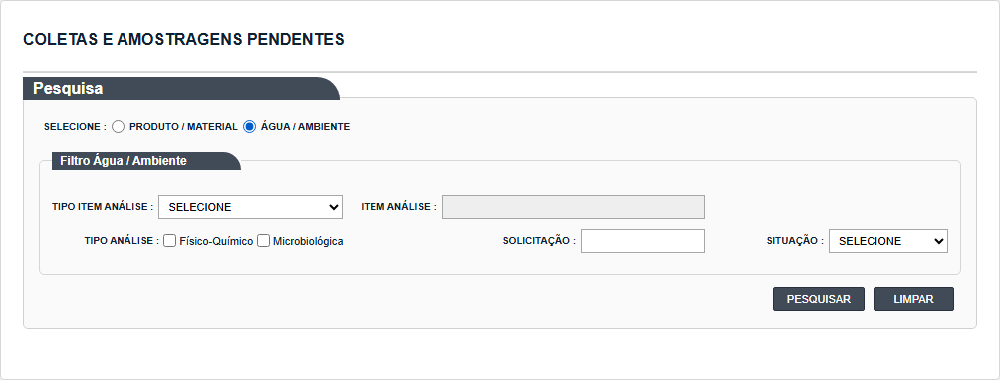
- Linha da amostragem (visão do administrador). Na tela 13 a linha da 033/26 mostra SOLICITAÇÃO, SITUAÇÃO (Pendente), RESPONSÁVEL (vazio), TIPO ANÁLISE, TIPO ITEM ANÁLISE, ITEM ANÁLISE, ITEM ENTRADA e as ações: o lápis (registrar) e o LOG. A linha Pendente não tem Cancelar (DV-CQ-040 repete). A lista traz "Registros: 1", "Página 1 de 1" e Anterior / Próxima.
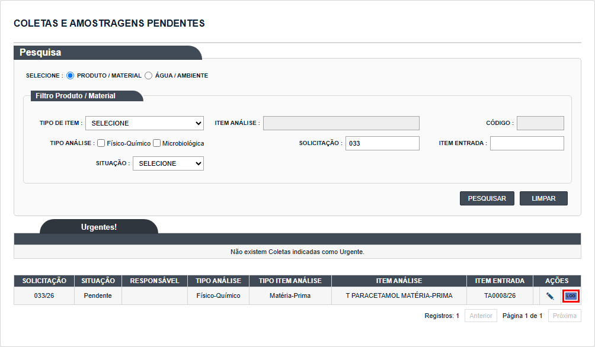
- Histórico (LOG). O ícone LOG abre a janela "LOG DA AMOSTRAGEM". Para a 033/26 ela diz "Não há alterações registradas.", com o botão FECHAR.
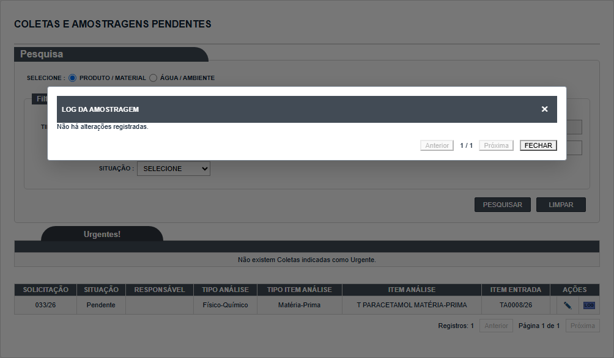
- Abrir o Registro de Amostragem. Clique no lápis. Abre o pop-up "Registro de Amostragem", com VOLTAR e ×, e os blocos Dados da Solicitação, Dados Complementares da Solicitação, Verificação de Amostragem, Regras para Amostragem, Utensílios, Pontos de Amostragem, Registro da Amostragem (Qtd. Solicitação, Retenção, Referência, Estabilidade, Justificativa, Observações) e Responsáveis e Datas (Verificado Por e Amostrado Por, cada um com data e hora). Botões do fim: CONFERIR CAMPOS, RESTAURAR DADOS, SALVAR REGISTRO, IMPRIMIR FICHA e VOLTAR. Ao abrir, aparece a faixa "Verificação de Amostragem inativa!" e 12 perguntas de verificação soltas, porque a Regra Amostragem do item T.INS-001 está sem Verificação vinculada (DV-CQ-N-043).
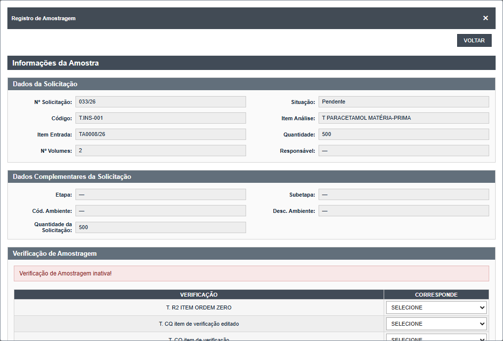
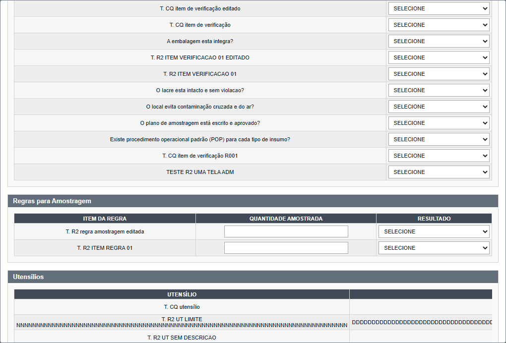
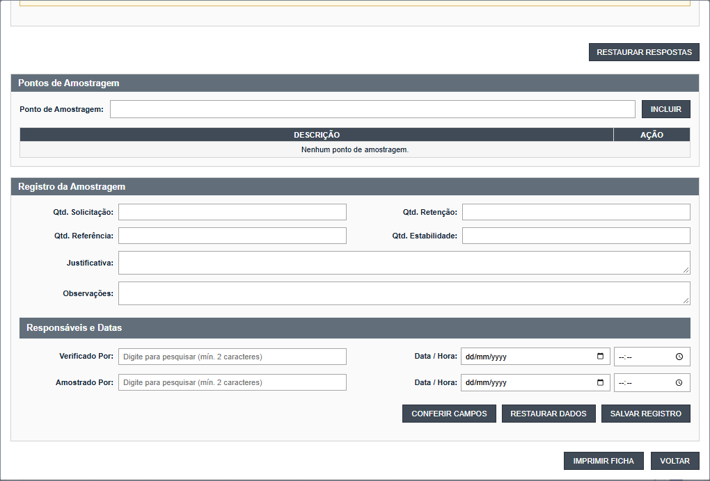
- CONFERIR CAMPOS e SALVAR REGISTRO com o registro vazio. CONFERIR CAMPOS lista as pendências numa caixa amarela, sem perguntar nada. SALVAR REGISTRO pergunta primeiro "Confirma a operação?" (SIM e NÃO) e só depois de SIM mostra a lista de recusas: a pergunta vem antes das conferências.
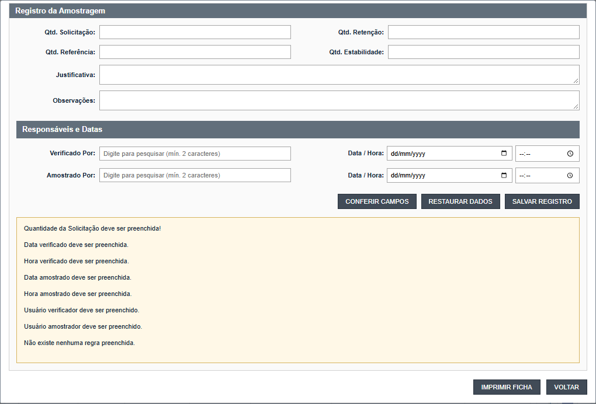
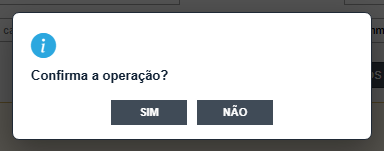

- Incluir o ponto de amostragem. Digite o ponto (por exemplo "PONTO TESTE C1 A") e clique em INCLUIR: ele entra na grade com a ação EXCLUIR. Com o campo vazio, INCLUIR diz "Informe o ponto de amostragem.".
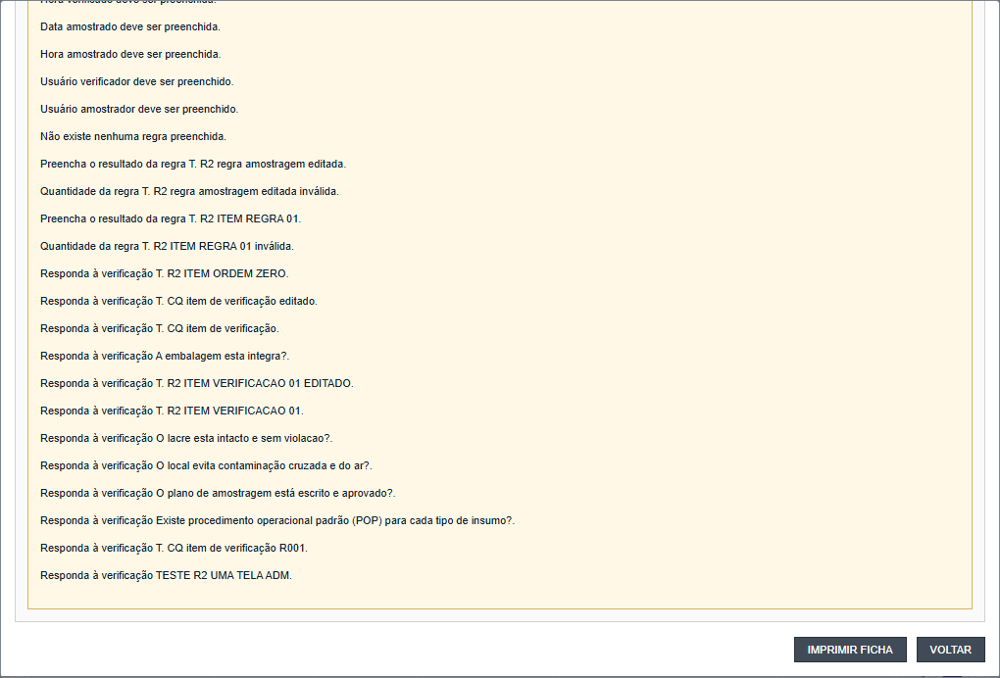
- Responder e preencher. Responda SIM às 12 verificações, informe quantidade e resultado nas duas regras, as quantidades (Solicitação 10, Retenção 5, Referência 5, Estabilidade 0) e escolha Verificado Por e Amostrado Por (busca com no mínimo 2 caracteres; a lista traz todos os usuários, não só amostradores). Datas e horas completam o bloco.
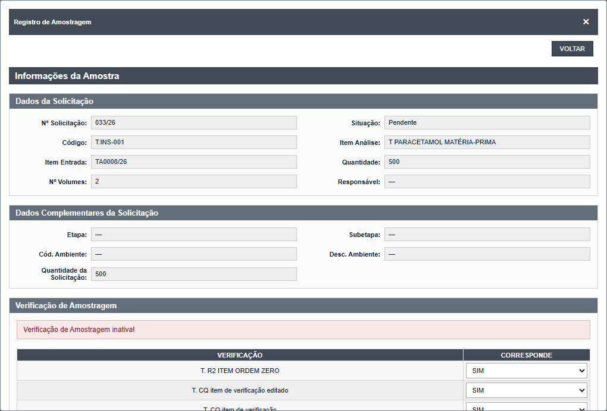
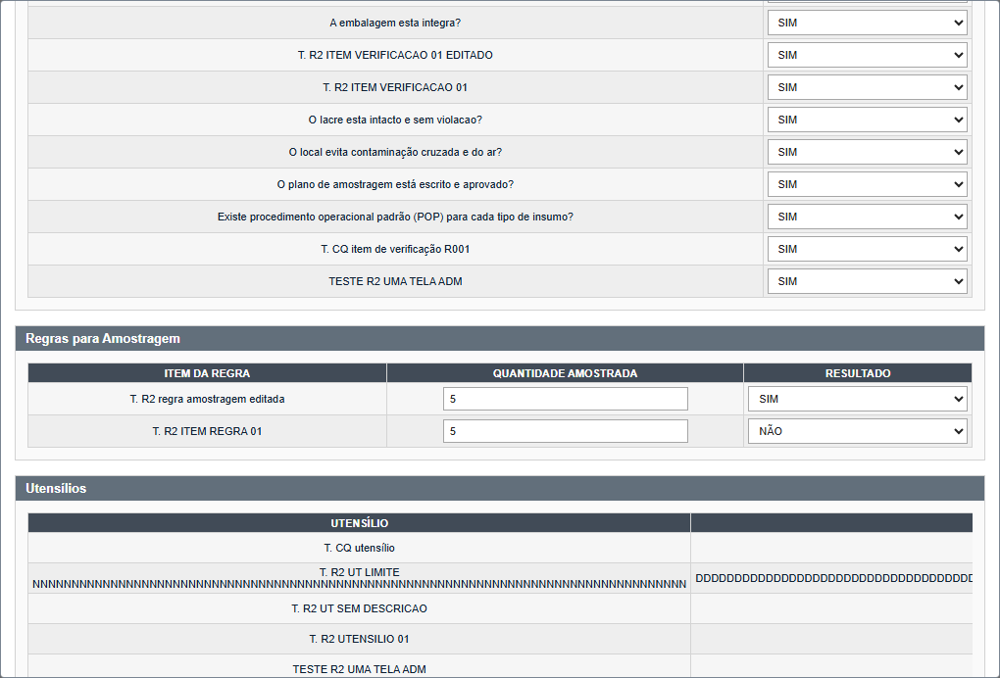
- Recusas que a tela impõe. Resultado NÃO numa regra sem justificativa: "A justificativa deve ser preenchida, pois existe(m) resultado(s) negativo(s) na regra amostragem e/ou verificação amostragem ." (o espaço antes do ponto é do sistema). Verificador e amostrador na mesma pessoa: "Usuário Verificador e Usuário Amostrador não podem ser iguais.". Quantidade da regra negativa: "Quantidade amostrada inválida em um ou mais itens de regra.".
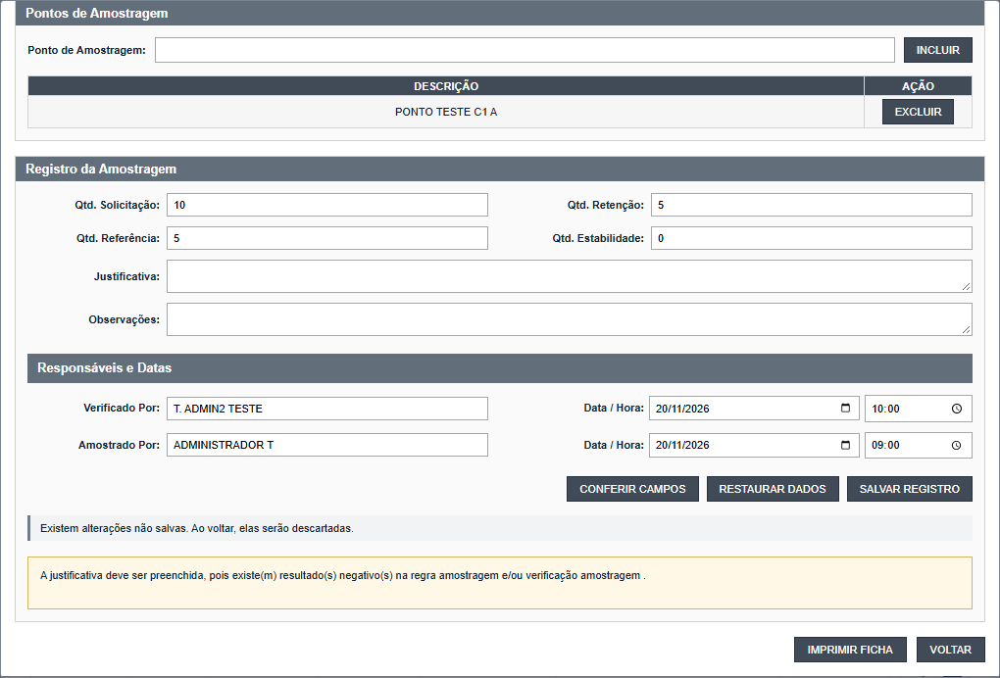
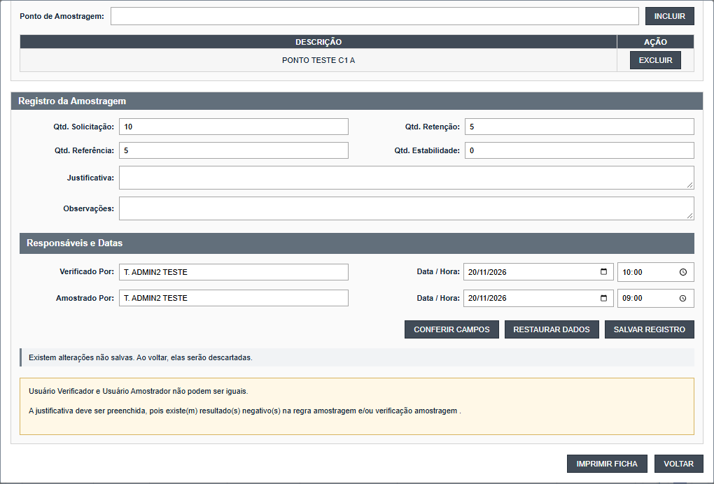
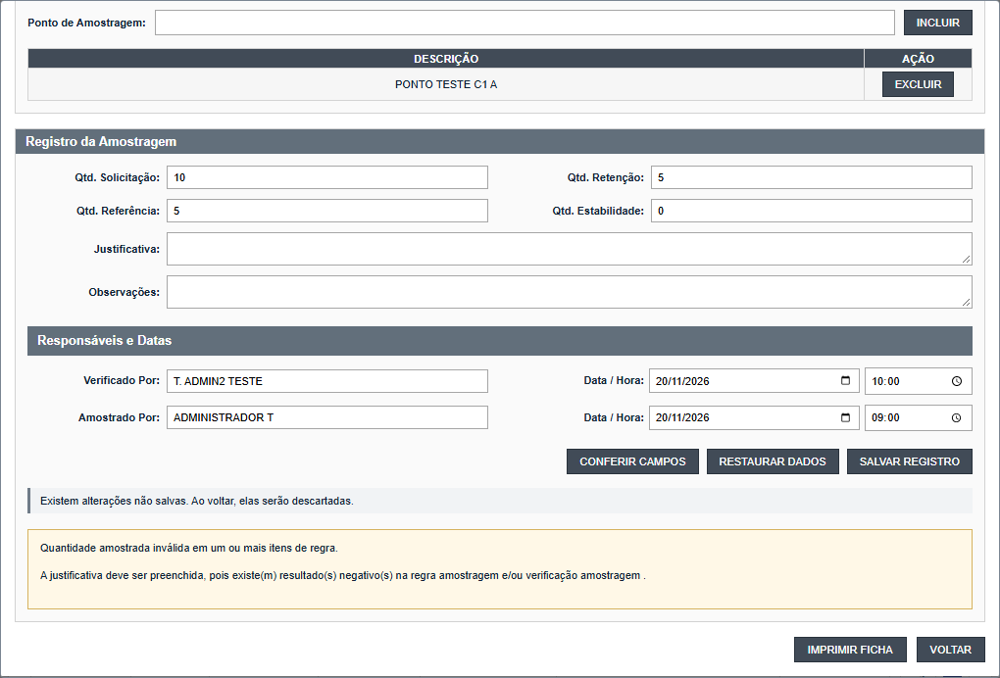
- O que o CONFERIR CAMPOS não recusa. Passam sem pendência: data de amostragem no futuro (31/12/2027), verificação anterior à amostragem (19/11 antes de 20/11) e quantidade 99999 numa solicitação de 500. Como a gravação foi recusada por outro motivo, não se sabe se o servidor recusaria esses três casos.
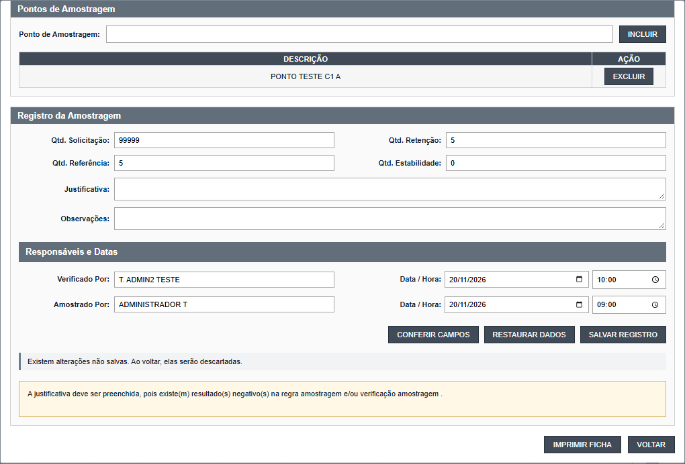
- Gravar: o servidor recusa (DV-CQ-N-043). Com tudo preenchido e o CONFERIR CAMPOS sem pendências, clique em SALVAR REGISTRO e SIM. A gravação é recusada e uma faixa vermelha diz "Uma verificação não pertence às regras aplicáveis à amostragem." A amostragem continua Pendente e a solicitação não avança para a análise.
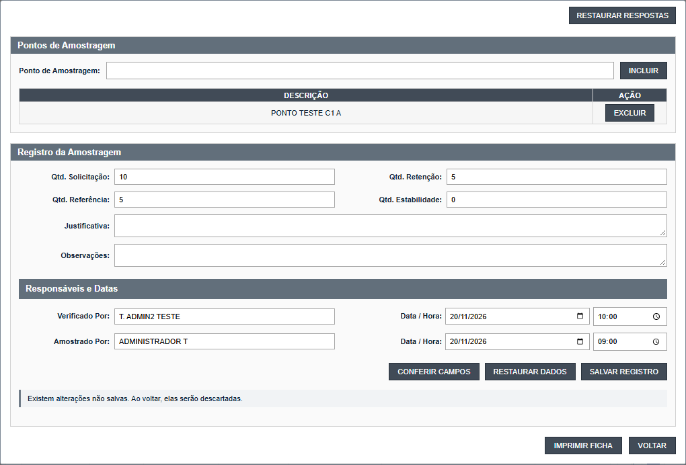
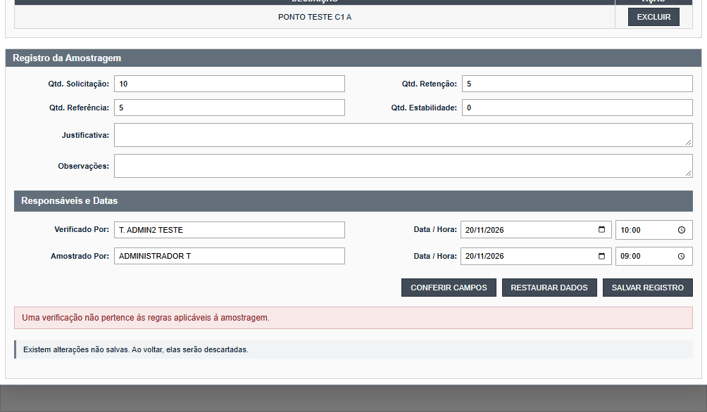
Como era no legado (do legado; a confirmar na versão nova): o registro era uma tela própria (Consultar Amostragem) e, ao salvar, a amostragem passava a "Executada" com "Alteração efetuada com sucesso.". A lupa (detalhes) só aparece em amostragem Executada ou Cancelada; não havia nenhuma na massa de 20/11/2026.
Ícones e botões da lista
| Ícone | O que faz | Em que situação aparece |
|---|---|---|
| Lápis (Editar) | Abre o pop-up Registro de Amostragem | Visto na linha Pendente (imagem 21); no legado, também em Programada |
| LOG (Ver log) | Abre a janela "LOG DA AMOSTRAGEM" | Visto na linha Pendente (imagem 22) |
| Lupa (Ver detalhes) | Abriria os detalhes | Só em amostragem Executada ou Cancelada: não foi possível ver (nenhuma na massa) |
| X (Cancelar) | Pediria "Confirma o cancelamento do item?" e justificativa | Não aparece na linha Pendente (DV-CQ-040 repete) |
| Lixeira | — | Não existe nesta lista |
Botões da tela: PESQUISAR e LIMPAR. IMPRIMIR da lista não aparece. Botões do pop-up: CONFERIR CAMPOS, RESTAURAR DADOS, RESTAURAR RESPOSTAS, SALVAR REGISTRO, IMPRIMIR FICHA e VOLTAR.
Botões e ações
(Campos, botões e colunas conferidos na tela em 20/11/2026; as regras de cada campo e a fonte são do código do legado.)
As regras de acesso estão na seção de segurança.
| Botão ou ação | Quando aparece | O que faz | Para onde leva o registro | Fonte |
|---|---|---|---|---|
| Pesquisar | Sempre | Carrega as duas grades (urgentes e normal) | Não muda | Index.cshtml:189; Script/ColetaPendente.js:171-175 |
| Limpar | Sempre | Esvazia os filtros e esconde as grades | Não muda | Index.cshtml:190; Script/ColetaPendente.js:24-55 |
| Ver detalhes (lupa) | Amostragem Executada ou Cancelada | Abre a Visualizar Amostragem | Não muda | _GridConsultaColetasPendentes.cshtml:81-87; Dom/Coleta/ColetaPendentePodeSerVisualizadaSpecification.cs |
| Editar (lápis) | Amostragem Pendente ou Programada | Abre o Registro de Amostragem | Registro | _GridConsultaColetasPendentes.cshtml:90-96; Dom/Coleta/ColetaPendentePodeSerEditadaSpecification.cs |
| Ver log | Em cada linha | Abre o histórico da amostragem ("amostragem" na grade normal; "pendente" na de urgentes) | Não muda | _GridConsultaColetasPendentes.cshtml:97-101; _GridConsultaColetasPendentesUrgentes.cshtml:99-103 |
| Cancelar | Comentado no código; não aparece | Pediria "Confirma o cancelamento do item?" e a justificativa | Cancelada | _GridConsultaColetasPendentesUrgentes.cshtml:104-111; Script/ColetaPendente.js:177-189; Controllers/PendentesController.cs:218-250 |
| Imprimir | Comentado no código; não aparece | Pediria a impressão da lista (o ícone fica escondido e seria mostrado depois da pesquisa) | — | Index.cshtml:41-43; Script/ColetaPendente.js:110 e 120. Visto em teste: CT-CQ-R2-REL-11 (Bloqueado), 30/10/2026 |
Mensagens do sistema
As marcadas "vista" aparecem nos prints de 20/11/2026. As recusas do Registro de Amostragem estão listadas em "O que o sistema recusa".
| Mensagem | Quando aparece | Fonte |
|---|---|---|
| A pesquisa não retornou nenhum resultado. | Lista normal sem linhas (vista, prints 02 e 03) | _GridConsultaColetasPendentes.cshtml:43 |
| Não existem Coletas indicadas como Urgente. | Grade de urgentes sem linhas (vista, prints 02 e 03) | _GridConsultaColetasPendentesUrgentes.cshtml:132 |
| Verificação de Amostragem inativa! | Ao abrir o registro de um item cuja regra não tem Verificação vinculada (vista, print 05) | Imagem |
| Confirma a operação? | Clique em SALVAR REGISTRO, antes das conferências (vista, print 09) | Imagem |
| Uma verificação não pertence às regras aplicáveis à amostragem. | Gravação recusada pelo servidor (vista, print 20; DV-CQ-N-043) | Imagem |
| Não há alterações registradas. | Janela do LOG de uma amostragem sem histórico (vista, print 22) | Imagem |
| Alteração efetuada com sucesso. | Registro gravado (não foi possível ver: a gravação é recusada) | Código da tela |
| Confirma o cancelamento do item? / Cancelamento efetuado com sucesso. | Só se o botão Cancelar voltar a existir (DV-CQ-040) | ColetaPendente.js:185 (legado) |
| Ocorreu um erro interno não esperado. | Falha ao chamar o servidor (não vista) | CQApi.js:19 (legado) |